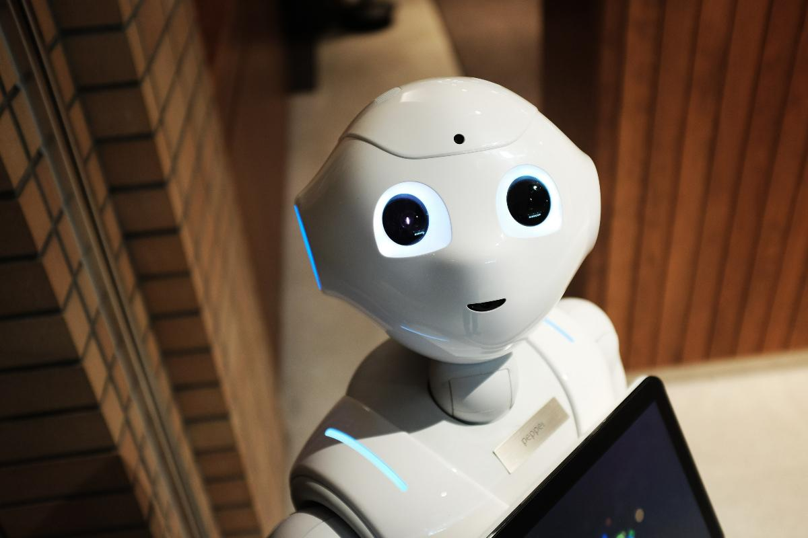
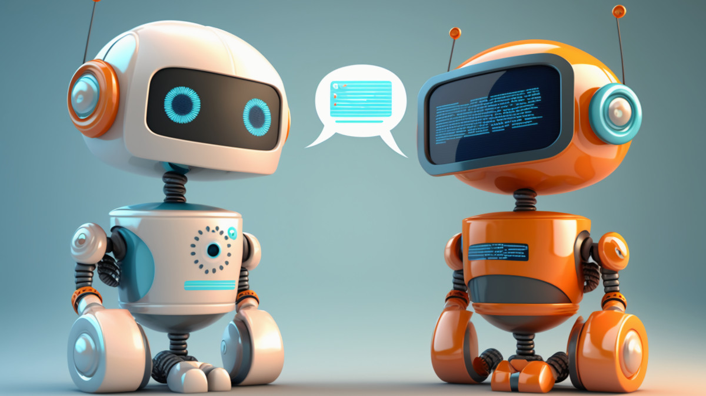

Nos complace darte la bienvenida a un emocionante viaje a través del fascinante mundo de la inteligencia artificial. La IA no es solo una tecnología del futuro; es una realidad vibrante que ya está redefiniendo la forma en que vivimos, trabajamos y nos relacionamos con la tecnología. A medida que te aventures en las profundidades de esta página, desentrañarás los misterios de cómo las máquinas pueden aprender, razonar y tomar decisiones, y cómo estos avances están transformando industrias enteras. Desde la medicina y la robótica hasta la inteligencia emocional de los chatbots, la IA se está convirtiendo en una parte integral de nuestra vida cotidiana.
Entra en el apasionante mundo de la inteligencia artificial, donde las fronteras de la posibilidad tecnológica se expanden constantemente. Este sitio web es tu pasaporte para explorar cómo la IA está impulsando el futuro. Al sumergirte en nuestras páginas, descubrirás que la inteligencia artificial no es solo un campo de estudio; es una fuerza transformadora que influye en todas las facetas de nuestra sociedad. Desde sistemas de reconocimiento de voz hasta la resolución de problemas complejos, la IA está mostrando su inmenso potencial en el arte y la ciencia de la resolución de problemas.
Te damos la bienvenida a un viaje a través del apasionante y siempre cambiante paisaje de la inteligencia artificial. En esta página, te sumergirás en los fundamentos y las aplicaciones de la IA, explorando cómo las máquinas pueden aprender de los datos y tomar decisiones de manera autónoma. Pero la IA va más allá de los algoritmos y los modelos. Es una revolución que está redefiniendo industrias, creando nuevos paradigmas de interacción hombre-máquina y abriendo la puerta a la innovación en todos los rincones del mundo.
Esta página es tu portal a un mundo en el que las máquinas pueden aprender, comprender y tomar decisiones por sí mismas. La inteligencia artificial está en auge y está cambiando radicalmente la forma en que las empresas operan, cómo resolvemos problemas y, en última instancia, cómo experimentamos la vida cotidiana. Prepárate para adentrarte en una serie de temas que abarcan desde las redes neuronales profundas y la visión por computadora hasta la ética y la responsabilidad en la IA. La inteligencia artificial es una promesa, un desafío y una maravilla, y estamos aquí para explorarla en toda su amplitud.
La inteligencia artificial es una revolución que está en marcha, y esta página es tu guía para descubrir sus misterios. Te invitamos a explorar cómo las máquinas pueden comprender y responder al lenguaje humano, cómo los robots pueden llevar a cabo tareas complejas y cómo la IA está transformando la atención médica, la educación y muchas otras áreas. A medida que profundices en los aspectos técnicos de la IA y en sus aplicaciones concretas, comenzarás a comprender el impacto que está teniendo en la forma en que trabajamos y vivimos.
Entra en el futuro de la tecnología con nosotros mientras desvelamos el poder de la inteligencia artificial. Esta página es una ventana al emocionante mundo de los algoritmos, las redes neuronales y el aprendizaje automático. Desde la visión por computadora hasta el procesamiento del lenguaje natural, descubrirás cómo la IA está resolviendo problemas, impulsando la creatividad y mejorando la eficiencia en todos los aspectos de nuestras vidas. También exploraremos juntos los desafíos éticos y sociales que surgen en este viaje.
La inteligencia artificial es una maravilla tecnológica que está revolucionando el mundo tal como lo conocemos. En esta página, te sumergirás en los conceptos, las aplicaciones y las implicaciones de la IA. Desde cómo los algoritmos pueden imitar la inteligencia humana hasta cómo se están utilizando para predecir el clima y descubrir tratamientos médicos innovadores, esta página es tu puerta de entrada a un universo de posibilidades. A medida que explores, también reflexionarás sobre las cuestiones éticas y las consideraciones de privacidad que rodean a la IA.
La inteligencia artificial es un campo de estudio emocionante y una tecnología revolucionaria que está transformando el tejido mismo de nuestra sociedad. Esta página es tu invitación a explorar cómo las máquinas pueden aprender, razonar y tomar decisiones por sí mismas. Te llevaremos a través de las complejidades de las redes neuronales, el aprendizaje automático y las aplicaciones prácticas que van desde la detección de fraudes hasta la medicina personalizada. La IA no solo está impulsando la innovación tecnológica, sino que también plantea preguntas fundamentales sobre la ética y la responsabilidad en la era de la inteligencia artificial.